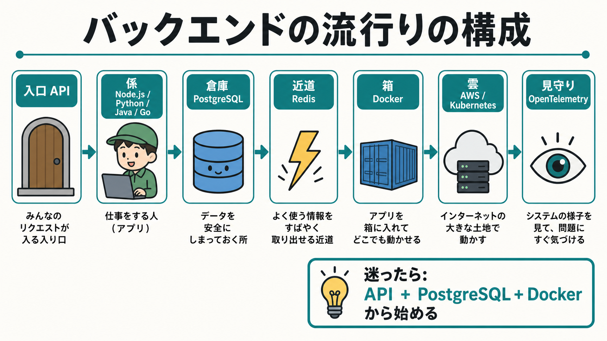

バックエンドで今流行りの構成は？
2026年6月16日時点でよく選ばれるバックエンド構成を、むずかしい言葉をできるだけ使わずに整理する。小学生向けに、アプリの裏側を「お店のしくみ」にたとえて説明する。

結論
今の流行りをひとことで言うと、API + アプリ本体 + PostgreSQL + Redis + Docker + クラウド + 見守りです。小さく始めるなら、まずはAPI、PostgreSQL、Dockerの3つを覚えると全体が見えやすいです。
言語やフレームワークは、チームや目的で変わります。よく見る組み合わせは、TypeScript/Node.js + ExpressやNestJS、Python + FastAPIやDjango、Java + Spring Boot、Goです。
お店でたとえる
バックエンドは、画面にはあまり見えないけれど、アプリを動かす裏側の仕事をしています。お店で考えるとわかりやすいです。
| 役割 | たとえ | よく使われるもの |
|---|---|---|
| API | お客さんの注文を受ける入口 | REST API、GraphQL、gRPC |
| アプリ本体 | 注文を見て仕事をする係 | Node.js、Python、Java、Go |
| データベース | 大事な情報をしまう倉庫 | PostgreSQL、MySQL、MongoDB |
| キャッシュ | よく使うものを近くに置く近道 | Redis |
| コンテナ | アプリをどこでも動く箱に入れる | Docker |
| 動かす場所 | お店を置く大きな土地 | AWS、Google Cloud、Azure、Kubernetes |
| 監視 | お店の様子を見て問題に気づく係 | OpenTelemetry、Prometheus、Grafana |
流行りの基本形
- 画面やアプリがAPIに注文する。 「このユーザーの情報を見せて」「商品を買いたい」のようなお願いを送ります。
- バックエンドのアプリが考える。 ルールを確認し、ログインしているか、買ってよいか、どのデータが必要かを決めます。
- PostgreSQLに大事な情報を保存する。 ユーザー、注文、支払い、設定など、消えてはいけない情報をしまいます。
- Redisによく使う情報を置く。 毎回倉庫まで取りに行くと遅いものを、近くに置いてすばやく返します。
- Dockerで箱に入れて運ぶ。 自分のパソコン、テスト環境、本番環境で動き方が変わりにくくなります。
- クラウドやKubernetesで動かす。 人が増えたら台数を増やし、壊れたら別の場所で動かすようにします。
- OpenTelemetryなどで見守る。 遅いところ、失敗したところ、どのお願いで問題が起きたかを見つけやすくします。
数字で見る人気
Stack Overflow Developer Survey 2025では、言語としてJavaScript、SQL、Python、TypeScript、Java、Goが目立ちます。バックエンド技術ではNode.js、Express、FastAPI、Spring Boot、Flask、Djangoが調査項目に並び、データベースではPostgreSQLとRedis、ツールではDockerとKubernetesが大きな選択肢として出ています。
CNCFの2025年Annual Cloud Native Surveyでは、コンテナ利用者の82%がKubernetesを本番環境で使っていると発表されています。つまり、大きいサービスでは「Dockerの箱をKubernetesでたくさん並べて動かす」考え方がかなり普通になっています。
OpenTelemetryは、トレース、メトリクス、ログを集めるためのベンダー中立な仕組みとして公式ドキュメントで説明されています。これは「どこの見守りサービスを使っても、アプリ側の見守り方をそろえやすい」という意味です。
よくある構成
小さく始める
- TypeScript + Node.js
- REST API
- PostgreSQL
- Docker Compose
AIやデータにも強くする
- Python + FastAPI
- PostgreSQL
- Redis
- ジョブキュー
会社の大きなサービス
- Java + Spring Boot
- PostgreSQL
- Docker
- Kubernetes + OpenTelemetry
推測としての現場感では、新しく学ぶ人はTypeScript/Node.jsかPython/FastAPIから始めると入りやすいです。一方で、大きな会社や長く運用する業務システムではJava/Spring BootやGoも強い候補です。
もう1つの選び方として、短い処理だけを動かすならサーバーレスもあります。AWS Lambdaのようなサービスは、サーバーを自分で用意せずにコードを動かせるので、画像の加工、通知、定期実行のような小さな仕事に向いています。
最初に作るなら
迷ったら、次の順番で作るのがわかりやすいです。
- APIを1つ作る。 例: 「こんにちは」を返すAPI。
- PostgreSQLにつなぐ。 例: 名前を保存して、あとで取り出す。
- Dockerで動かす。 例: アプリとDBを同じ手順で起動する。
- ログを見る。 例: どのAPIが呼ばれたか、エラーが出たかを見る。
- 必要になってからRedisやKubernetesを足す。 最初から全部入れると、勉強するものが多すぎます。
大事なのは、流行りの名前を全部覚えることではありません。入口、仕事をする係、倉庫、箱、動かす場所、見守りという役割を理解することです。役割がわかれば、新しい名前が出てきても「これはどの係かな？」と考えられます。